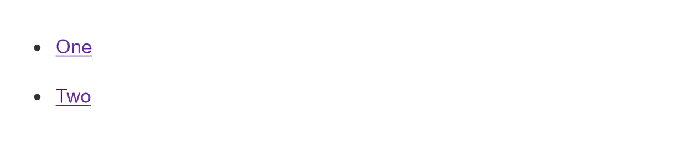

The aim of this task is to help you check your understanding of some of the values and units that we looked at in the lesson on The Cascade and Inheritance.
Note: You can try out solutions in the interactive editors below, however, it may be helpful to download the code and use an online tool such as CodePen, jsFiddle, or Glitch to work on the tasks.
If you get stuck, then ask us for help — see the {{anch("Assessment or further help")}} section at the bottom of this page.
In this task, you need to use one of the special values we looked at in the Controlling inheritance section to write a declaration in a new rule that will reset the background color back to white, without using an actual color value.

In the example below see if you can match the image above.
{{EmbedGHLiveSample("css-examples/learn/tasks/cascade/cascade.html", '100%', 700)}}
For assessment or further work purposes, download the starting point for this task to work in your own editor or in an online editor.
You can practice these examples in the Interactive Editors mentioned above.
If you would like your work assessed, or are stuck and want to ask for help: